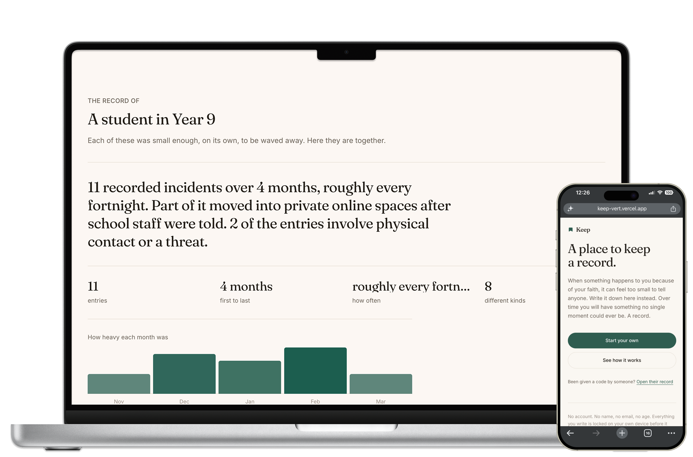
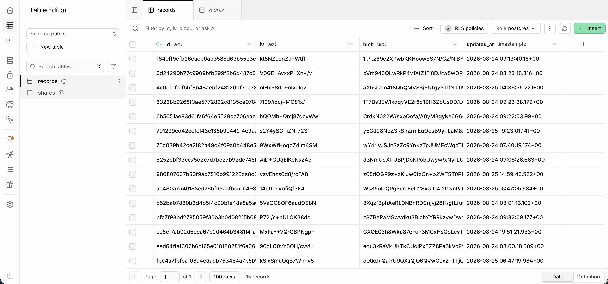
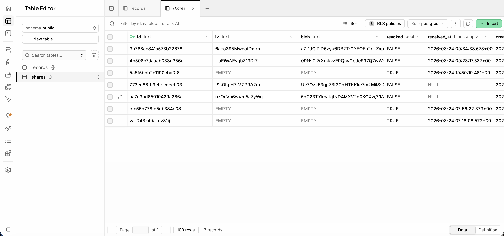

Before anything else
She is fourteen, she is in Year 9, and she is the person I built this for.
Everyone laughs. She laughs too, so that it stops.
It takes her three weeks
One incident. Three weeks ago. Nobody wrote it down at the time.
He has four hundred students and no record of anything that happened before today.
It happens again the following week, louder. She does not tell him a second time.
She has learned that telling an adult costs her something and changes nothing.
And Amina is not unusual
of Muslim students were bullied for their faith in a single school year. 22% of them monthly, weekly or daily.
had heard anti-Muslim comments from teachers or other school staff. The adult is sometimes the problem.
had considered changing how they look or behave to hide that they are Muslim.
Bully a child for being Muslim for long enough, and they stop being visibly Muslim.
Survey of Muslim students in grades 6 to 12, Massachusetts, 2023 to 2024.
campussafetymagazine.com/news/nearly-half-of-muslim-students-in-massachusetts-bullied-for-their-religious-identity/167136
So why does nobody act
Schools have a duty not to harass or discriminate on religion or race.
But there is no legal requirement to record racist incidents at all. It was scrapped in 2012 and refused again in 2023.
A school’s Title VI duty begins the moment it has notice.
But the conduct must be severe, pervasive or persistent. One incident almost never clears that bar.
Staff must report serious student incidents to the principal.
But persistent low level harassment is never judged serious one incident at a time.
Every one of these systems acts on patterns. Nothing in a child’s life produces one.
US Department of Education guidance on racial harassment; England’s recording requirement scrapped 2012 and refused March 2023; Ontario Education Act s.300.2 (Bill 157).
ed.gov/laws-and-policy/civil-rights-laws/harassment-bullying-and-retaliation/racial-incidents-and-harassment-against-students
So I built the thing that produces one
A private place for a secondary school student to write down what happens to them, until it adds up to something a school has to act on.

No app. No account. No name, no email, no age. It works on a school library computer.
Let me show you.
What Keep knows about Amina

records
sharesThese are the only two tables Keep has. An identifier, and text that cannot be read without her code.
Where this goes next
Davis et al. (2025). Why pupils do not report racist incidents. 78 pupils across ten Welsh schools.
journals.sagepub.com/doi/10.1177/27526461241312235
Kids get told the thing that happened to them was too small to matter.
It never is. Keep gives them somewhere to put it.
Try it yourself — keep-vert.vercel.app
12Survey of Muslim students in grades 6 to 12, Massachusetts, 2023 to 2024. Bullying, staff comments and concealment.
campussafetymagazine.com/news/nearly-half-of-muslim-students-in-massachusetts-bullied-for-their-religious-identity/167136Davis et al. (2025). Why pupils do not report racist incidents. 78 pupils across ten Welsh schools.
journals.sagepub.com/doi/10.1177/27526461241312235US Department of Education. Racial incidents and harassment against students. Notice, and the severe or pervasive standard.
ed.gov/laws-and-policy/civil-rights-laws/harassment-bullying-and-retaliation/racial-incidents-and-harassment-against-studentsUK government rejects demand for schools to record racist incidents, March 2023.
voice-online.co.uk/entertainment/exclusive/2023/03/10/government-rejects-demand-for-schools-to-record-racist-incidentsScottish Government. Barriers to reporting hate crime, citing the HMICS survey on updates to victims.
gov.scot/publications/understanding-tackling-barriers-reporting-hate-crime-evidence-review/pages/5Bill 157, Keeping Our Kids Safe at School Act. Ontario Education Act s.300.2.
wcdsb.ca/our-schools/safe-schools/bill-157-keeping-our-kids-safe-at-school-act